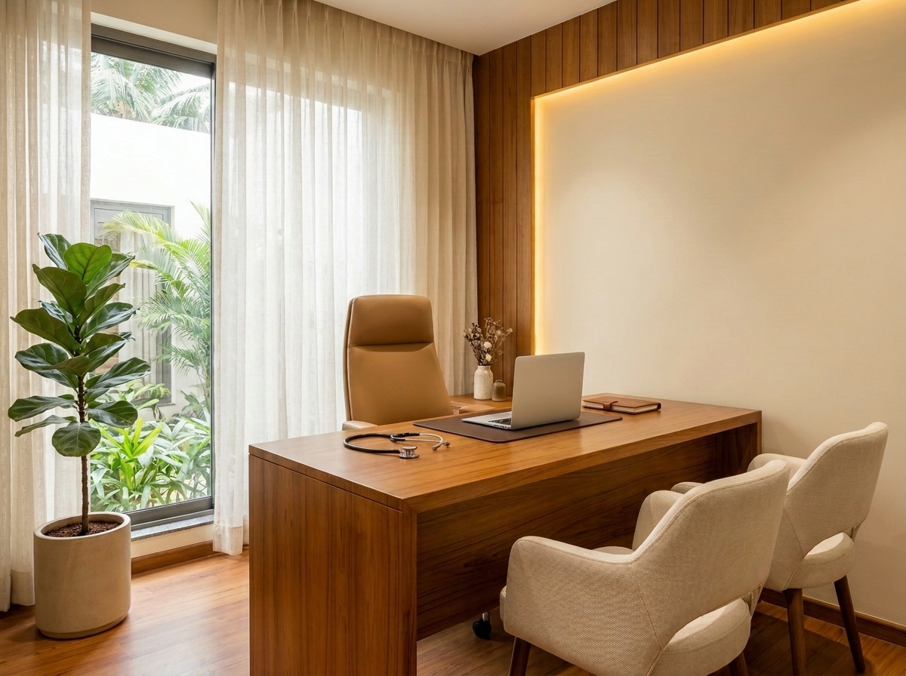

About Dr. VG Kidney Stone Clinic
Rooted in Pondicherry, trained across India's finest surgical institutes and international centers in Singapore and Florence.

Dr. S. Vijay Ganapathy
Native of Puducherry · Gold MedalistMeet Dr. Vijay Ganapathy
I am Dr. Vijay Ganapathy, a native of the French city of Pondicherry. After a memorable schooling at Petit Seminaire High School, I pursued my MBBS at Pondicherry Institute of Medical Sciences under Pondicherry University.
I completed my Master's in Surgery from JIPMER, Puducherry, graduating as the topper with a gold medal. I then completed my Urological Residency (MCh) at the Institute of Nephrourology, Bengaluru — a high-volume center specializing in laparoscopy and renal transplants.
My sub-specialization in Andrology was achieved through clinical fellowships at Singapore General Hospital and NUHS, Singapore. My research in Urodynamics earned me the Urogynaecology Fellowship from the International Continence Society (ICS), Florence, supported by an ICMR travel grant, and I presented a pioneering study on T. Pregabalin in stent removal at the World Congress of Endourology in Paris (2018).
Today, my focus includes scarless and keyhole surgeries for kidney stone diseases and vascular access for patients with kidney failure, alongside raising open awareness about Men's Health.
- MBBS – Pondicherry Institute of Medical Sciences
- MS General Surgery – JIPMER (Gold Medalist)
- MCh Urology – Institute of Nephrourology, Bangalore
- Fellowships – Andrology (Singapore), Urogynaecology (ICS, Italy)
- Research Presenter – ICS Florence 2017, WCE Paris 2018
Revolutionizing Men's Health & Scarless Urology
Men's health remains a taboo in many communities, often under-acknowledged and overlooked. My vision is to spark positive change through respectful, private dialogue and informed medical decisions.
We combine minimally invasive, scarless laser procedures with personalized care plans for kidney stones, prostate enlargement, and urethral issues — empowering every patient because if health is wealth, awareness is the path to it.

Better Information, Better Health
My clinical journey is rooted in the belief that informed healthcare leads to lasting recovery. Through international training, hands-on surgical fellowships, and global research presentations, we deliver world-class urology in Puducherry.
Professional Training
Laparoscopic workshops and urology conferences across India and Singapore.
Specialized Care
Scarless kidney stone surgery and vascular access for renal failure.
Research & Fellowship
ICS Fellowship, ICMR-funded research, and global forum publications.
Men's Health Advocacy
Community awareness camps and accessible patient education.

Education Timeline
MBBS
Pondicherry Institute of Medical Sciences, Pondicherry University
MS General Surgery (Gold Medalist)
JIPMER, Puducherry — Topper with Dr. S.C. Mitra & Dr. S.B. Sen Gold Medals
DNB General Surgery (Gold Medalist)
National Board of Examinations, New Delhi — Dr. B. Ramamurthi Gold Medal
MCh Urology (Gold Medalist)
Institute of NephroUrology, Bengaluru (RGUHS Gold Medal)
Clinical Observerships
Hands-on Training in Basic Laparoscopy
Billroth Hospital, Chennai
Urology Resident Course
Urological Association of Asia (UAA) Conference, Singapore
Clinical Observership in Endourology & Andrology
Singapore General Hospital (SGH), Singapore
Clinical Observership
National University Health System (NUHS), Singapore